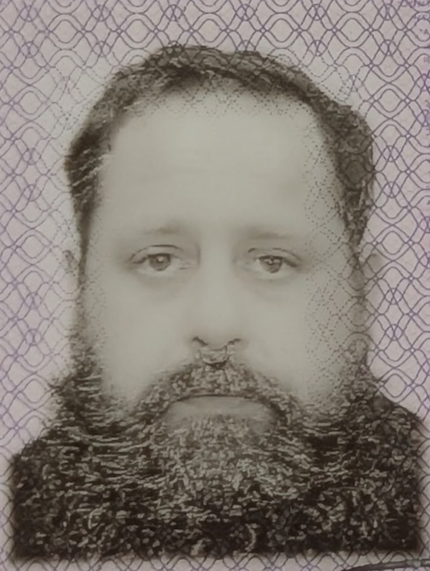

About Me
Based in Ottawa and Hamilton, I am an Interactive Media Design student at Algonquin College with a robust, decade-long professional background as an Audio Visual Technician and Rigger. My experience ranges from complex ground and down rigging installations to live event production.
My current work bridges the physical and hands-on production expertise with modern digital creation, photography, video editing, and UX/UI design.
Whether capturing imagery behind the lens, deploying large-scale technical setups, or drafting clean code for interactive web environments, I build functional, high-impact visual experiences.
My Hobbies & Interests
- Travel
- Food and drink
- Gritty from the Philadelphia Flyers
- Nightlife
